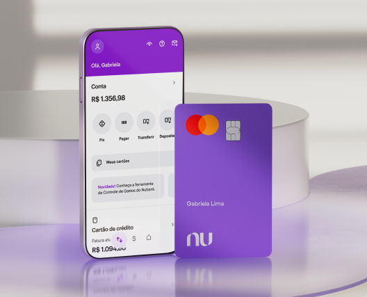

Nubank APK: saiba tudo sobre o mod que promete dinheiro infinito
O Nubank é um dos principais bancos digitais do Brasil e, devido a sua visibilidade, pessoas com más intenções tentam aproveitar o seu alcance e popularidade para aplicar golpes. Nesse contexto, está o Nubank APK, uma versão modificada do app da instituição financeira que usuários divulgam na Internet com a promessa de que ele oferece dinheiro infinito, além de outros benefícios como acesso a recursos extras e rápido aumento do limite do cartão de crédito.
Porém, o aplicativo não é recomendado por questões de segurança e vazamento de dados. Essa versão modificada oferece, por exemplo, riscos de invasão do sistema operacional do seu celular por meio de malwares que podem acessar as suas informações pessoais e financeiras. A seguir, saiba mais sobre o Nubank APK e entenda por que você não deve fazer o download desse mod que promete dinheiro infinito no seu smartphone Android.
